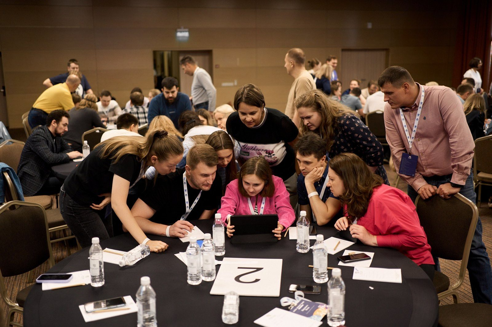
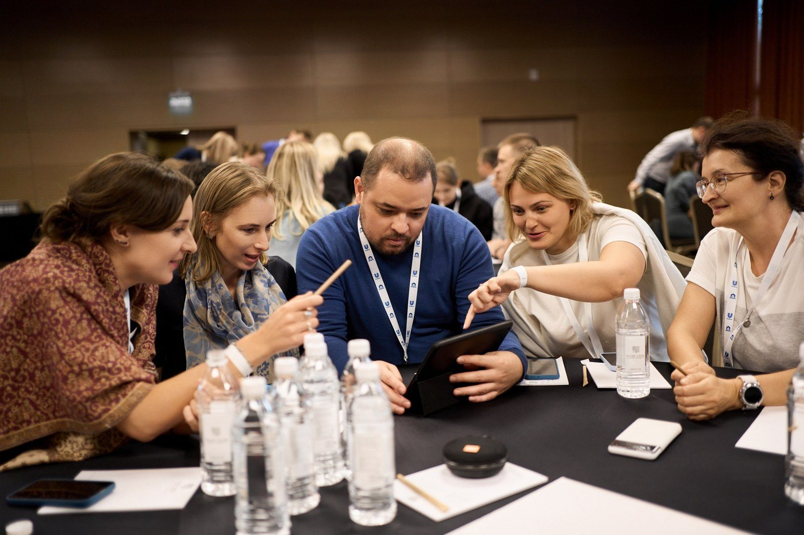
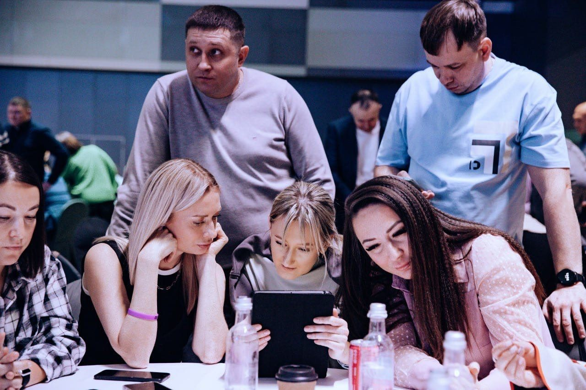
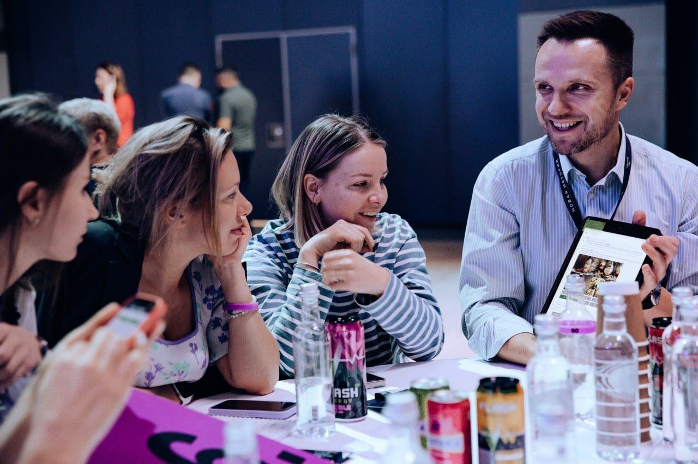
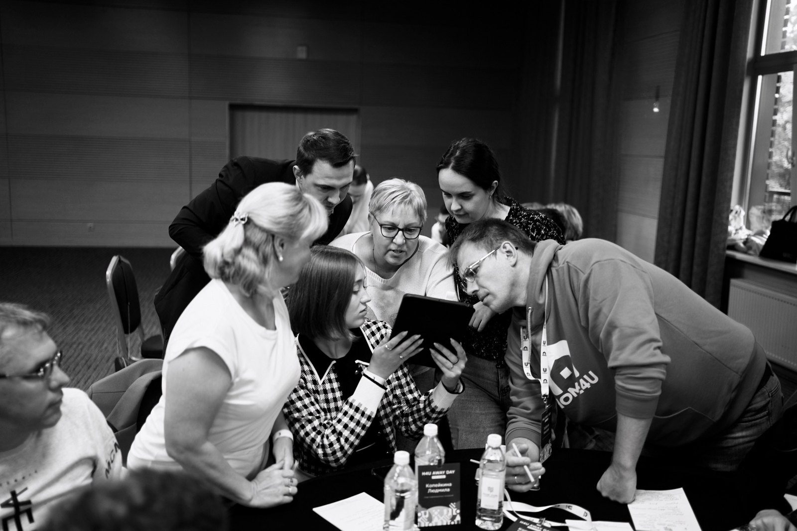
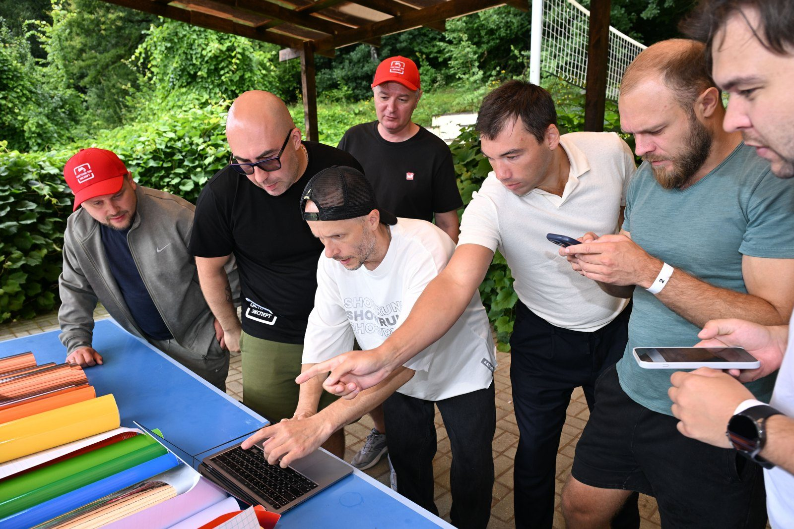
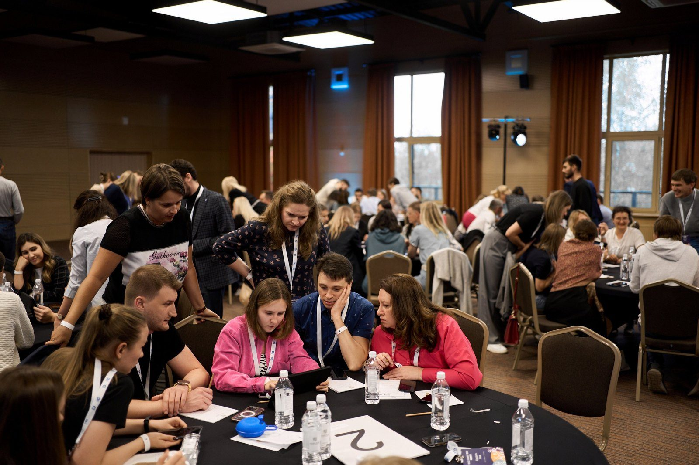
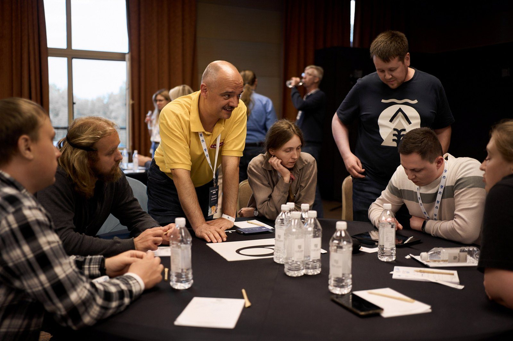
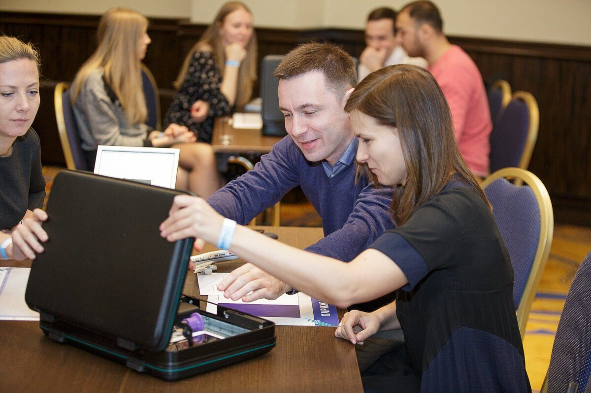

Как игра снимает страх перед нейросетями: тимбилдинг с премией BEMA 2025

Команда выходит к большому экрану. У неё три минуты. На экране логотип, который она час назад сделала в Midjourney, и рекламный ролик с голосом, сгенерированным нейросетью. В зале сидят «инвесторы» и решают, дать ли стартапу деньги.
Теперь представьте, что у экрана стоит ваш сотрудник, который утром говорил: «Нейросети это не для меня». Что должно случиться за два с половиной часа, чтобы он туда вышел? Рассказываем на примере нашей программы, которая получила премию BEMA 2025.
Почему сотрудники не пользуются нейросетями
Сценарий знакомый. Компания купила подписку, провела вебинар, написала инструкцию. Через месяц инструментом пользуются три человека из отдела.
Дело не в доступе и не в знаниях. Мешает ощущение «это сложно, у меня не получится». Лекция это ощущение не снимает: человек послушал, кивнул и вернулся к привычной работе.
Снимает его другое: когда человек сам сделал с нейросетью что-то осязаемое и показал коллегам. На этом построен тимбилдинг с нейросетями.


Как устроена игра «Стартап с нейросетями»
Это деловая игра, за которую Каталист получил премию BEMA 2025 в номинации о командообразующем проекте с использованием ИИ. Коротко о формате:
- от 60 до 300 участников;
- 2,5 часа в помещении;
- от 3 200 ₽ за участника.
Готовиться заранее не нужно. Хватает смартфона или выданного планшета, аккаунты помогаем открыть до старта.
Игра идёт в четыре шага.
Погружение, 30 минут. Эксперт простыми примерами объясняет, как работают нейросети, и показывает приёмы, которые понадобятся дальше.
Идея. Каждая команда придумывает стартап: что за продукт, для кого, сколько стоит. Стратегию продвижения помогает собрать ChatGPT.
Айдентика. В Midjourney команды рисуют логотип, мерч и баннеры. Кто успел быстрее, делает рекламный ролик и озвучивает его нейросетью.
Питчинг. Три минуты на большом экране перед «инвесторами». Команда доказывает, что продукт жизнеспособен. Сильные стартапы получают «инвестиции».
Есть приятный бонус: приветствие от искусственного интеллекта на 60 секунд с любым текстом. Его можно поставить в начало как обращение руководителя к гостям.
Как это выглядит вживую, видно в ролике с нашего мастер-класса по нейросетям, он идёт 1 минуту 50 секунд.

Почему игра работает, а лекция нет
Причин две.
Страх уходит через действие. Человек сам сгенерировал логотип, сам защитил идею перед коллегами. Фраза «это сложно» после этого не звучит. По нашему опыту, команды начинают применять приёмы в письмах и презентациях уже на следующей неделе после игры.
Это ивент, а не обязательный тренинг. Сотрудники не сопротивляются: у них соревнование, эмоции и награды в финале. Навык закрепляется практикой, а не слайдами.

Какие ещё есть форматы
«Стартап» не единственная игра с нейросетями. В линейке Каталиста 12 нейро-форматов для групп от 20 до 500 человек. Несколько примеров:
- «Нейрогалерея»: команды создают с нейросетями картины, концепции и визуалы;
- «Музыкальный Лейбл»: команды записывают треки с помощью нейросетей и выпускают общий альбом, 50-200 человек, от 3 400 ₽ за участника;
- «Нейрокалендарь»: каждая команда делает один месяц, из работ собирается общий календарь;
- «Озвучка 2.0»: команды озвучивают ролики предметами-инструментами и нейросетями, награды по номинациям.

Кому это подходит
- Отделу продаж. Азарт питчей и приёмы, которые потом остаются в письмах и КП.
- HR-команде. Готовый ивент, который заодно снимает барьер перед нейросетями.
- Маркетингу. Генерация концепций, текстов и картинок за один вечер.
- Всей компании. Формат работает и для отдела на 10-15 человек, и для компании на 500 участников. Большие группы делим на команды по уровню.

Что происходит от заявки до финала
- Бриф на 15 минут. Обсуждаем цель встречи, повод, число участников и площадку.
- Сценарий под вашу команду. Методист адаптирует задания под отрасль и бренд компании.
- Игра 2-2,5 часа. Разбор инструментов занимает 15-20 минут, дальше команды работают сами.
- Финал. Показ работ на большом экране, голосование, награды.
- Материалы после. Работы команд, фотоотчёт и шпаргалки с промптами.

Если нужен рабочий навык, а не праздник
Игра снимает страх. Чтобы нейросети вошли в ежедневную работу, у нас есть практикум: 3-4 часа на задачах конкретного отдела, приёмы Claude, ChatGPT и Gemini, помощник на каждую мини-группу.
Для руководителей проводим закрытый мастер-класс о стратегии внедрения ИИ и личных рабочих сценариях. Ведёт Саид Нигматулин, партнёр-эксперт Каталиста по нейросетям. В 2025 году он провёл более 30 выступлений и корпоративных мастер-классов.
Пример из практики: на стратегической сессии с нейросетями сотрудники PepsiCo придумали новый концепт продукта.

Коротко о нас
Каталист проводит тимбилдинги и корпоративы с 2010 года. За это время мы сделали 4 800 проектов, получили 16 наград ивент-индустрии и собрали каталог из 50+ программ. Минутный ролик об агентстве:
Если хотите, чтобы ваша команда перестала бояться нейросетей и попробовала их в деле, загляните на страницу тимбилдинга с нейросетями и оставьте заявку на бриф.
нейросетитимбилдингHRИИобучение персонала